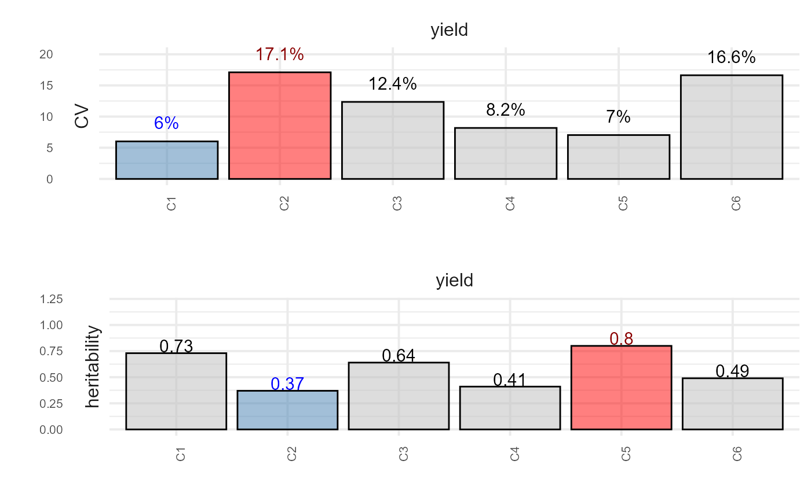
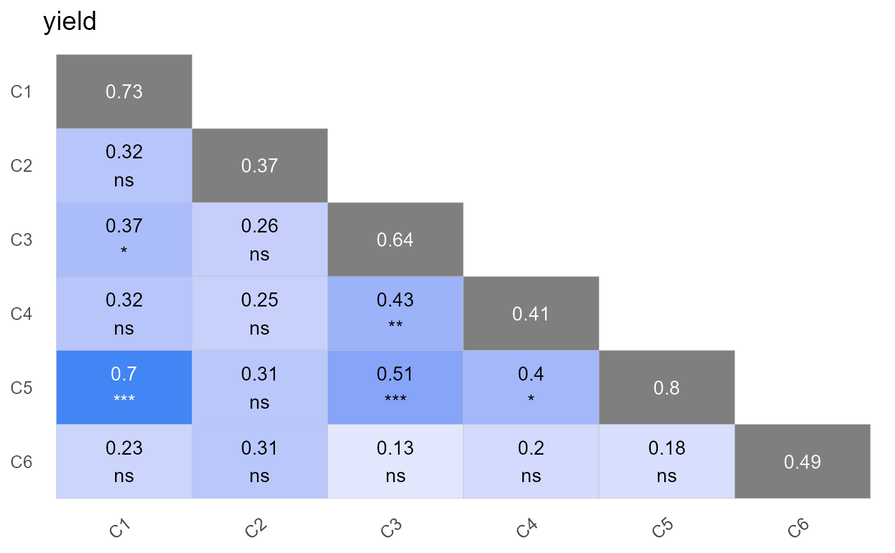
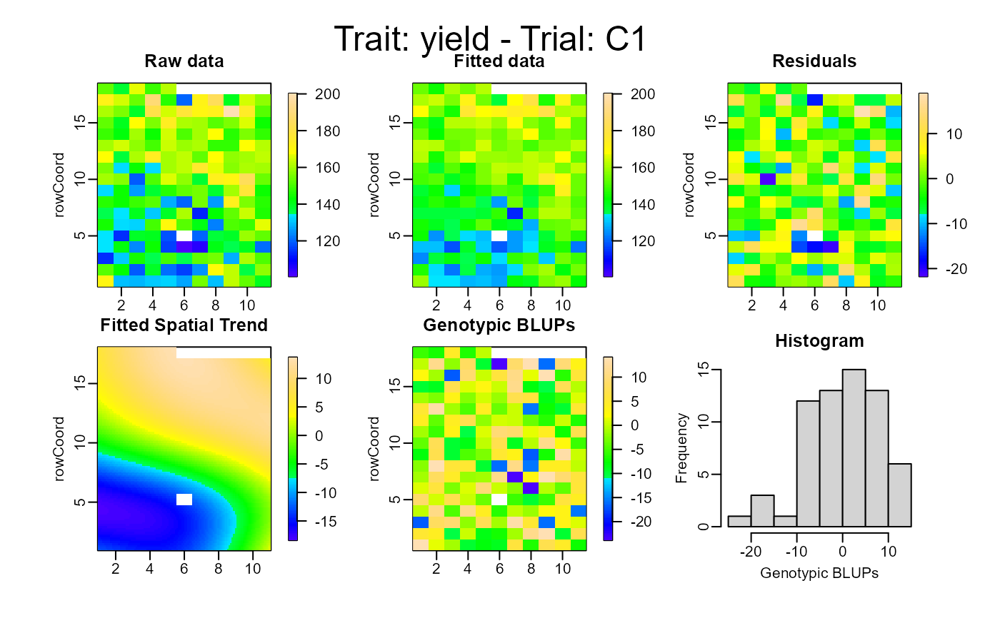
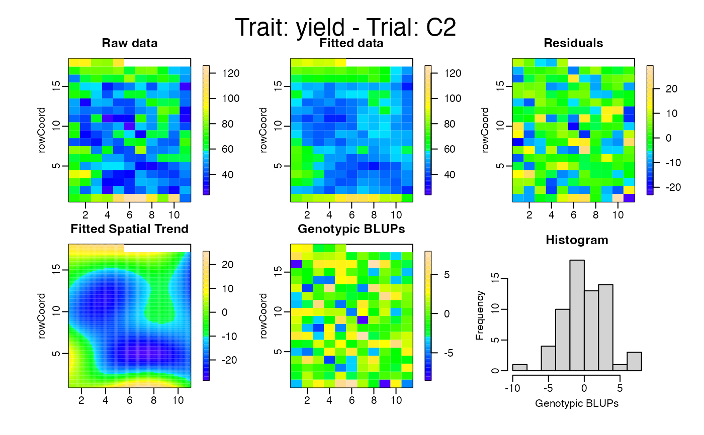
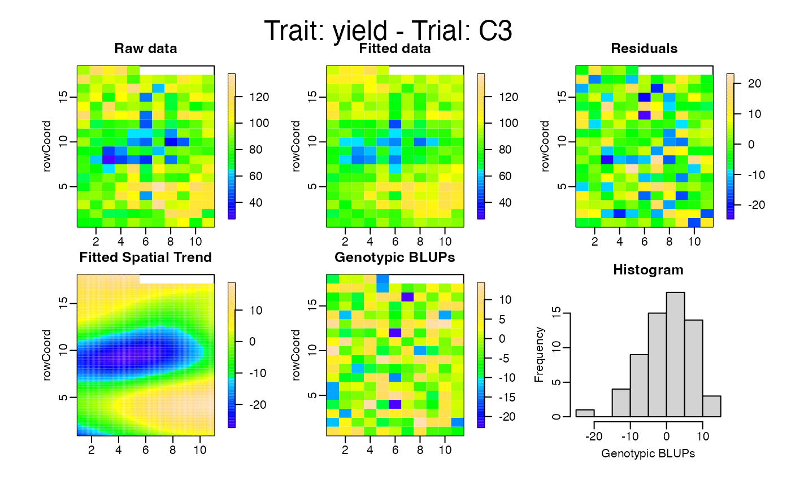
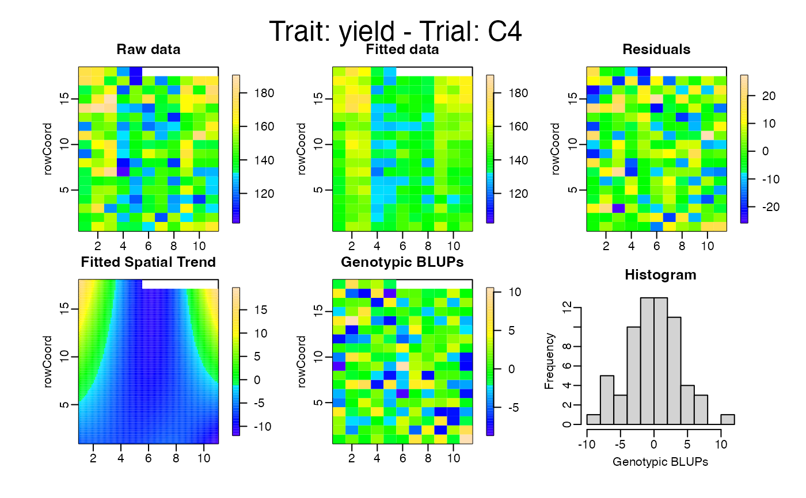
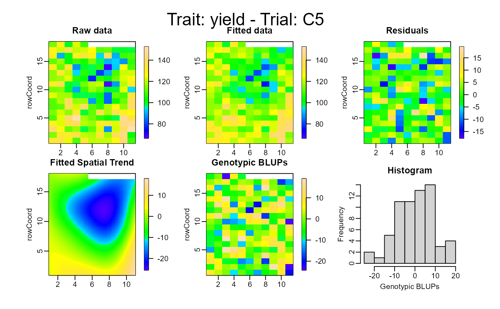
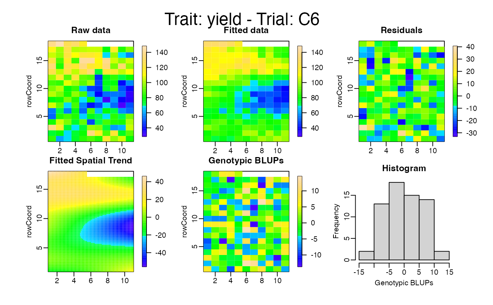

Create several plots for an object of class smaAgri
Arguments
- x
An object inheriting from class
smaAgriresulting of executing the functionsingle_trial_analysis()- type
A character string specifiying the type of plot. "summary", "correlation" or "spatial".
- filter_traits
An optional character vector to filter traits.
- nudge_y_cv
Vertical adjustment to nudge labels by when plotting CV bars. Only works if the argument type is "summary". 3 by default.
- nudge_y_h2
Vertical adjustment to nudge labels by when plotting h2 bars. Only works if the argument type is "summary". 0.07 by default.
- horizontal
If
FALSE, the default, the labels are plotted vertically. IfTRUE, the labels are plotted horizontally.- theme_size
Base font size, given in pts. 15 by default.
- axis_size
Numeric input to define the axis size.
- text_size
Numeric input to define the text size.
- ...
Further graphical parameters. For future improvements.
Examples
# \donttest{
library(agridat)
library(agriutilities)
data(besag.met)
dat <- besag.met
results <- check_design_met(
data = dat,
genotype = "gen",
trial = "county",
traits = c("yield"),
rep = "rep",
block = "block",
col = "col",
row = "row"
)
out <- single_trial_analysis(results, progress = FALSE)
print(out)
#> ---------------------------------------------------------------------
#> Summary Fitted Models:
#> ---------------------------------------------------------------------
#> trait trial heritability CV VarGen VarErr design
#> 1: yield C1 0.73 6.022489 87.39848 82.86095 row_col
#> 2: yield C2 0.37 17.104998 25.80684 108.68546 row_col
#> 3: yield C3 0.64 12.357202 83.57907 118.55567 row_col
#> 4: yield C4 0.41 8.179408 35.75568 136.21218 row_col
#> 5: yield C5 0.80 7.037586 103.79822 66.97523 row_col
#> 6: yield C6 0.49 16.632367 71.92232 207.53073 row_col
#>
#> ---------------------------------------------------------------------
#> Outliers Removed:
#> ---------------------------------------------------------------------
#> trait trial genotype id outlier
#> 1: yield C1 G60 50 TRUE
#>
#> ---------------------------------------------------------------------
#> First Predicted Values and Standard Errors (BLUEs/BLUPs):
#> ---------------------------------------------------------------------
#> trait genotype trial BLUEs seBLUEs BLUPs seBLUPs wt
#> 1: yield G01 C1 141.4161 6.078858 143.5308 5.249771 0.02706176
#> 2: yield G02 C1 157.8110 5.979708 155.8037 5.194547 0.02796663
#> 3: yield G03 C1 127.3836 6.091534 133.0256 5.269999 0.02694925
#> 4: yield G04 C1 154.8445 6.093866 153.8364 5.270427 0.02692863
#> 5: yield G05 C1 163.8950 6.132141 161.1831 5.271809 0.02659352
#> 6: yield G06 C1 128.5168 6.087902 133.6857 5.247130 0.02698141
#>
plot(out, type = "summary", horizontal = TRUE)
#> Warning: The `facets` argument of `facet_grid()` is deprecated as of ggplot2 2.2.0.
#> ℹ Please use the `rows` argument instead.
#> ℹ The deprecated feature was likely used in the agriutilities package.
#> Please report the issue at
#> <https://github.com/AparicioJohan/agriutilities/issues>.

plot(out, type = "correlation")

plot(out, type = "spatial")






# }